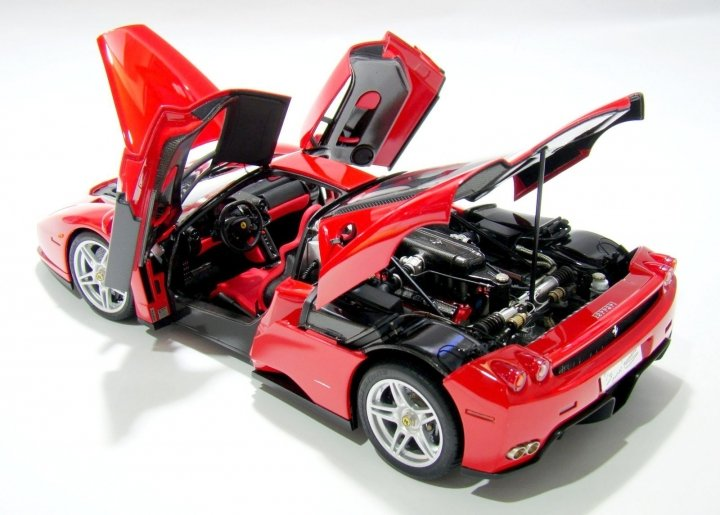

One day you will wake up and there won’t be any more time to do the things you’ve always wanted. Do it now.
Hobbies often provide a creative outlet that you might not get in your everyday life. They allow you to do something that’s just for you, that can help you forget your daily problems, unwind after a hard day and give you a lot of pleasure. Hobbies are simply anything you do that’s for fun. You aren’t getting paid to do it, it’s something you like to do with your free time that helps you decompress and connect with other people. For a lot of people these days it seems like their only leisure activities are watching television and catching up on Facebook. That’s a shame, because hobbies—from rock climbing to collecting silver spoons—can have real benefits. I have three hobbies.
I love to travel. Mentally or physically, I escape to other places. I want to see new places, learn new things, enjoy new experiences and then return home to the familiar, the predictable, before taking off again on their travels. I like adventures and to escape their normal monotonous life. I like not knowing what I can expect and want to deepen their knowledge in other lifestyles. How do other people live? What do they eat? What are their hobbies and values? And what better way to find these things out than by exploring the world.

Art comes in many shapes and forms, and while you may not be a brilliant illustrator, painter, writer, or musician, scale models offer you the opportunity to create your own art. Sure there’s an engineered, paint by numbers element to the whole build process, but there is plenty of room for personal flair every step of the way. Instructions are only ever there as a guide, and once you’ve mastered how to put a model together, you can add your personal touch in any way you so choose. With part builds, you have the opportunity to break down a potentially large and long-term project into bite-sized pieces. The benefit of this is that you can see fast progress over a shorter period of time, without being bogged down or overwhelmed by the larger scope of your build. As you progress to the completion of your model you will get a strong sense of personal achievement, and with each new scale model, you’ll see continuous improvement across all areas.
Walking and running are great, but cycling allows you to travel further than by foot, taking you out of town and into freedom. I have lost count of the number of times that new cyclists return from a ride and talk about the new places they have discovered just a few miles from their own doorstep. Nothing lets you experience the country and the countryside like cycling. When you are pedalling hard into a headwind, tired, freezing cold and with the rain running down the back of your neck you could be forgiven for wondering what you are doing this for. Cycling can very easily become addictive, putting you in a position where you feel you ‘have’ to go out no matter the weather, or how you feel. Sadly, for some, this means cycling becomes a chore, but one that still leaves them feeling very agitated if they don’t get their biking fix.